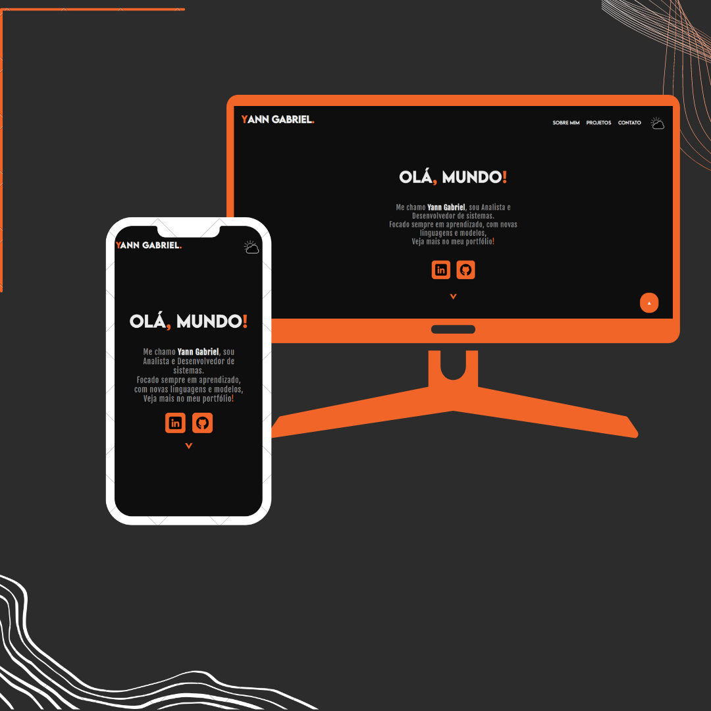

Muito Obrigado!
Obrigado por ter tirado um pouco do seu tempo e ter visto meu portfólio até aqui!
Espero que meus trabalhos tenham te cativado e que nós possamos fazer um juntos!
Me chamo Yann Gabriel, sou Analista e Desenvolvedor de sistemas.
Focado sempre em aprendizado, com novas linguagens e modelos,
Veja mais no meu portfólio!


Sou um garoto de 18 anos de idade que
sempre amou a área da programação.
possuindo uma facilidade imensa em aprendizado,
trabalhos e comunicação!
Tudo isso pelo meu amor em programar!



Projeto produzido com o intuito de se tornar uma vitrine dos meus projetos,
Trabalho desenvolvido com tecnologias Front-End, focando na parte,
estetica, responsiva e agradativa.
Esse projeto foi feito com o intuito
de personalizar um local onde o úsuario pode acessar,
a página foi produzida com HTML e CSS somente.
-Você não conseguira enviar o formúlario!
Tudo por questões de segurança!-
Acesse ele também clicando abaixo:
Tela de Login
Nesse projeto,
procurei fazer a criação de um cardápio de restaurante interativo,
onde o usuario se encontra com um menu
divertido e harmonico.
Site feito inteiramente com CSS e HTML,
focado em estilização e interação.
Acesse ele também clicando abaixo:
Cardápio virtual
Fiz esse site sobre um dos meu jogos favoritos,
onde nele testei de forma mais aplicada
a colocação de vídeos e também foi meu primeiro dite "onlypage".
Site feito com CSS e HTML,
com as escritas sendo de punho próprio.
Acesse ele também clicando abaixo:
Site sobre The Last of Us
Aqui estão minhas redes sociais,
onde você pode descobrir mais sobre
alguns projetos ou até mesmo criar o seu!
Clicando abaixo você poderá visitar meus repositorios,
encontrando meus códigos e trabalhos!
No GitHub você encontrará
somente sites feitos para teste,
não sites oficiais que trabalhei.
No meu instagram
você encontrará todos meus sites ja feitos,
com seus códigos e peculhariedades!
No Instagram,
criamos um meio mais fácil de comunicação e aprendizados,
então já segue lá!
O meu WhatsAppé aberto somente a negociações de produções de sites!
Contanto, me chame caso queira fechar um site para você ou sua empresa!
As mensagens enviadas serão respondidas da forma mais eficaz possivel!
Obrigado por ter tirado um pouco do seu tempo e ter visto meu portfólio até aqui!
Espero que meus trabalhos tenham te cativado e que nós possamos fazer um juntos!